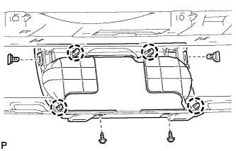
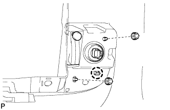
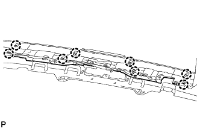
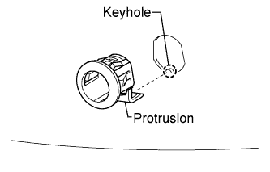
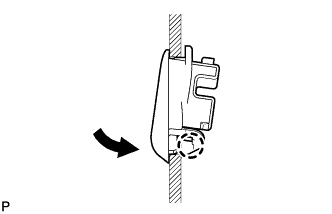
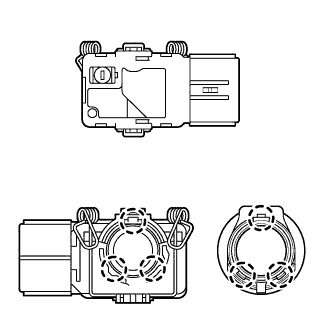
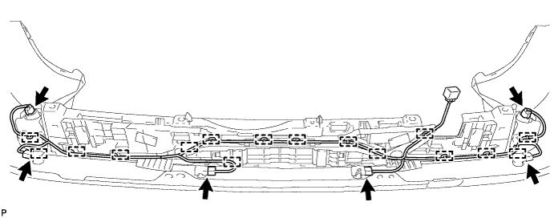
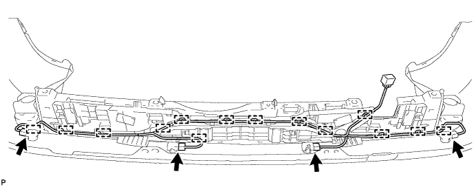
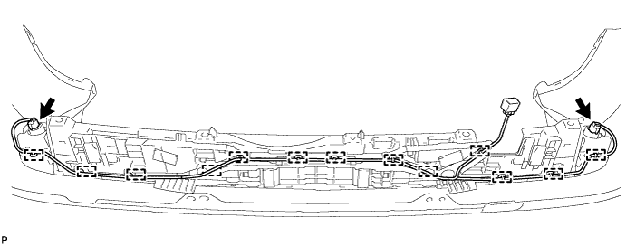

REAR BUMPER (w/ Towing Hitch) > REASSEMBLY |
| 1. INSTALL REAR NO. 2 STEP COVER |
 |
Attach the 4 claws to install the step cover.
Install the 2 screws and 2 clips.
| 2. INSTALL REAR LOWER BUMPER COVER |
Install the rear lower bumper cover with the clip.
| 3. INSTALL REAR FOG LIGHT ASSEMBLY LH |
 |
Attach the claw to install the fog light.
Install the 2 nuts.
| 4. INSTALL REAR FOG LIGHT ASSEMBLY RH |
| 5. INSTALL REAR BUMPER ENERGY ABSORBER |
 |
Attach the 8 claws to install the energy absorber.
| 6. INSTALL NO. 2 ULTRASONIC SENSOR RETAINER (w/ TOYOTA Parking Assist-sensor System) |
 |
Align the keyhole and protrusion as shown in the illustration.
Install the ultrasonic sensor retainer to the rear bumper.
| 7. INSTALL NO. 3 ULTRASONIC SENSOR RETAINER (w/ TOYOTA Parking Assist-sensor System) |
 |
Attach the claw to install the ultrasonic sensor retainer as shown in the illustration.
| 8. INSTALL NO. 2 ULTRASONIC SENSOR (w/ TOYOTA Parking Assist-sensor System) |
 |
Attach the 2 claws to install the ultrasonic sensor.
Connect the connector.
| 9. INSTALL NO. 3 ULTRASONIC SENSOR (w/ TOYOTA Parking Assist-sensor System) |
 |
Attach the 3 claws to install the ultrasonic sensor.
Connect the connector.
| 10. INSTALL NO. 2 FRAME WIRE |
w/ TOYOTA Parking Assist-sensor System, w/ Rear Fog Light:
Install the No. 2 frame wire.
Attach the 16 clamps to install the frame wire.
Connect the 6 connectors.

w/ TOYOTA Parking Assist-sensor System, w/o Rear Fog Light:
Install the No. 2 frame wire.
Attach the 14 clamps to install the frame wire.
Connect the 4 connectors.

w/o TOYOTA Parking Assist-sensor System, w/ Rear Fog Light:
Install the No. 2 frame wire.
Attach the 13 clamps to install the frame wire.
Connect the 2 connectors.
